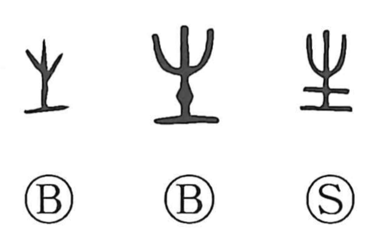

生

Kun: ikiru, ikasu, ikeru, umareru, umu, ou, haeru, hayasu, ki, nama | On: sei, sho
life ・ to live ・ to be born ・ to grow ・ raw
Explanation
Originally a pictograph of a sprouting plant pushing up from the earth, this character takes its meaning from germination and growth. From that image it came to express being born, growing up, living, and life itself, and it applies not only to humans but also to animals and plants. In bronze inscriptions, 生 can even denote “people,” as in 百生, meaning a multitude of folk (later written 百姓), and it is also used directly for “life.” In Japanese it further carries the sense of “as born” or “raw,” and appears in verbs such as hayasu “to let grow” (hige o hayasu) and ikeru “to arrange/plant” (hana o ikeru), as well as the reading ki in compounds like kiito “raw silk.”